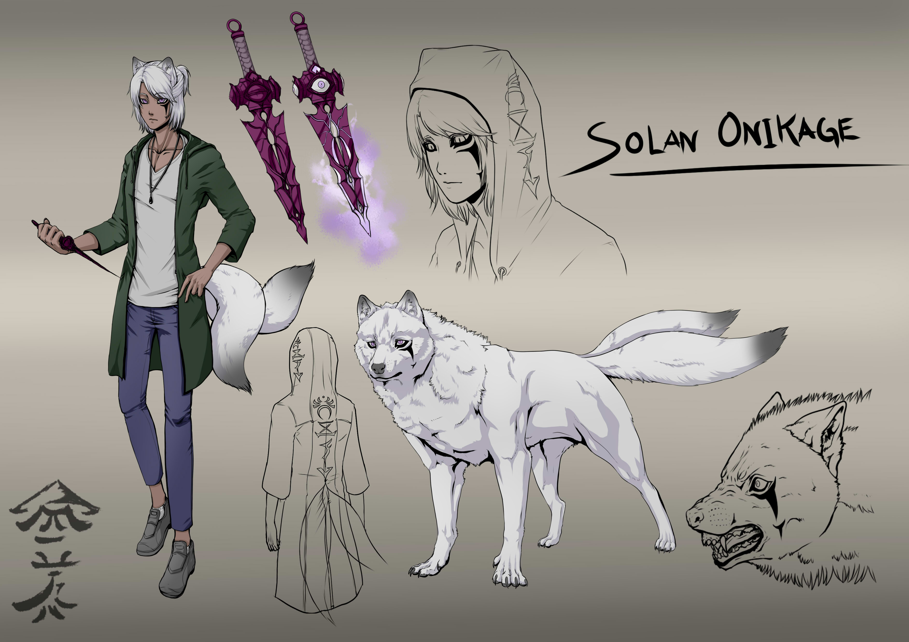

About Solan
Solan's father ,Katashiro, was known as the most unforgivable criminal known in his world. Katashiro took his own life, in order to break the bond between him and the King of Gloomveins for his son to be able to take down his monsters he created himself. Ever since Solan and his mother Saige are going rought times.
Solan characteristics
- He lives in Railong
- Born in January 17th
- Always wears his hoodie when he thinks of his father
- Is a guardian and protects a Village althought the people despites his father
- Overprotective to his mother Saige
- Appears small and innocent but is able to take down large enemies
Relatives and Friends
Some of his more or less living relatives...:D